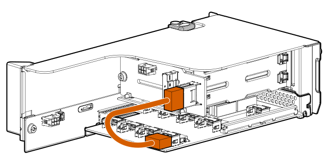
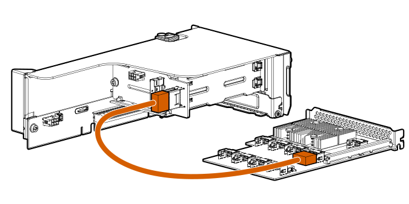
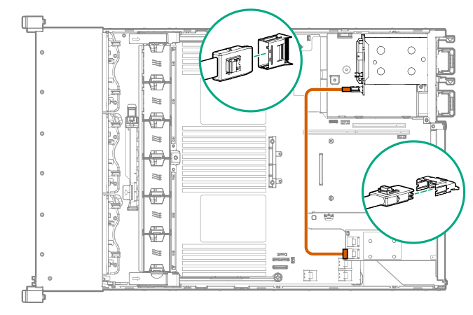

Cable routing: Rear 2SFF SAS/SATA riser drive options Rear 2SFF drive option to a SAS Expander, both in the primary slot  Rear 2SFF drive option in the secondary slot to a SAS Expander in the primary slot  Rear 2SFF drive option above the power supplies to a controller 